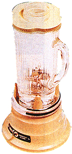

COUNTRY LORE
If your "stainless"steel pots are stained, try rubbing them with a little salt.
A Rainy Day Film
After several days or weeks without rain, the windshield on my car gets a greasy film on it. Then, when it finally does rain and I turn on my wipers, they smear the film, making it even harder to see.
In order to fix this, I fill a small plastic spray-bottle with floor-wax remover. Just a couple of squirts before I turn on the wipers gives me clear vision. This trick is especially useful at night, when oncoming headlights make vision even worse.
-Bud Deunk Fairview
Park, Ohio
Taking Trees For A Ride
My husband and I moved to our new home on five acres last year. We had old nursery stock that needed to be moved and we wanted to put some of it around the house to landscape. Instead of calling a professional to do it at a high cost, we decided to remove the trees ourselves. First we dug around them to loosen the roots. Then we hooked a rope to our 1970 Ford truck and attached the other side of the rope to a wooden-slat platform to be used as a sled. Then we hauled the trees to the selected new spots and replanted them. We got lots of laughs the first time we used this technique, but I'll tell you this: it didn't cost us a thing, except for a little time and patience.
-Mrs. Dale Fowler
Glen St. Mary, Florida
Southern Chicken Diet
This morning, my wife excitedly collected 40 eggs from our 50 hens. It all started a month ago, while out buying whole corn and Eggette mash for my chickens. I got into a conversation with a farmer who told me that he used to raise fighting cocks. He said that a chicken farmer from down South gave him this method of increasing his egg supply: Each day feed them a little dog food-approximately 25% of their diet. When I told the clerk what I wanted, she pointed out a 25-pound bag of dog food and said it was what other farmers fed their chickens. The first time I gave my chickens a small bucket of the food (a gallon or so), the egg production jumped from about 24 to 40. From that time on the count has stayed in the mid 30s. Yesterday I gave them another half bucket ...and today 40. Because this is something new to me, and generally unknown to most, I felt I had to share it.
-J. Orlando Lawhorn
Mayville, Michigan
Recipe For Garden Glory
|
|
|
|
|
 |
|
|